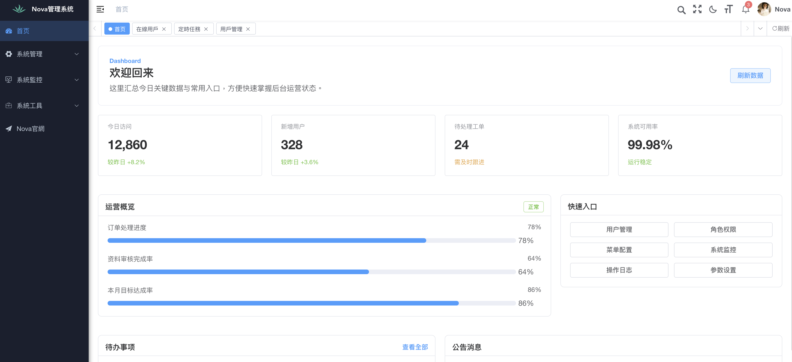
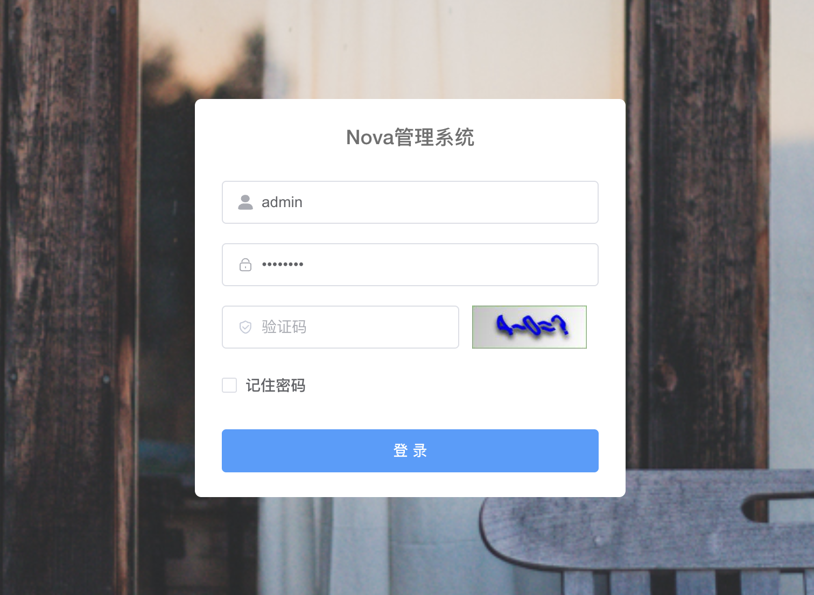
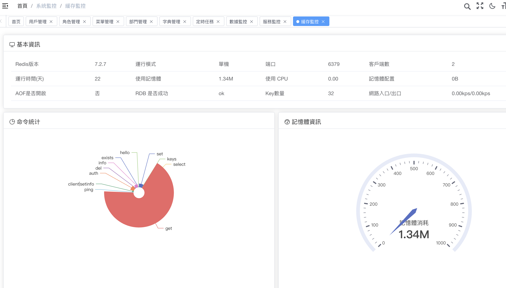
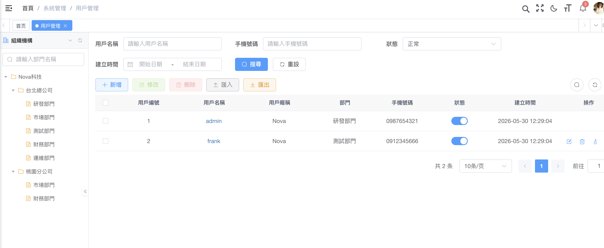
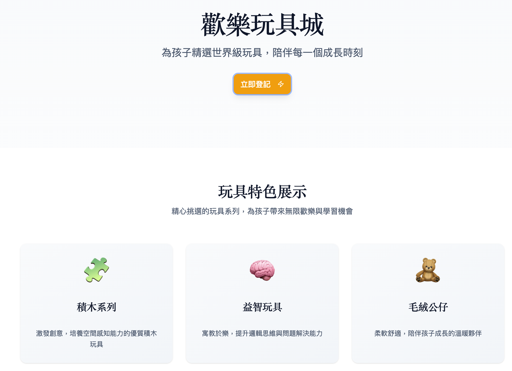
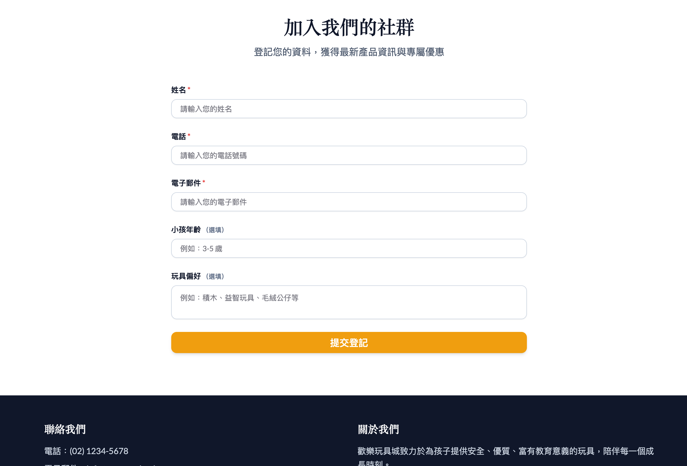

後台管理系統
適合需要管理會員、訂單、內容、權限或營運資料的團隊。頁面結構清楚，方便後續串 API 或擴充功能。
Backend Admin / Landing Page / Case by Case
Nova接案工作室專注協助品牌、店家與小型團隊製作後台管理系統與一站式前台頁面。 從登入、會員列表、數據監控到活動 Landing Page，都能依照需求做成簡潔好維護的純前端版本。

What I Build
適合需要管理會員、訂單、內容、權限或營運資料的團隊。頁面結構清楚，方便後續串 API 或擴充功能。
把零散資訊整理成 Dashboard、圖表區塊、狀態卡片與表格，讓營運狀況更容易追蹤。
製作可直接放上 GitHub Pages 的 Landing Page，包含品牌介紹、服務內容、案例展示與行動呼籲。
Selected Works
包含後台管理系統與前台活動頁面，能依照不同產業調整資訊架構與視覺風格。
首頁儀表板、登入頁、系統監控、會員列表。



品牌 Landing Page、活動介紹頁、服務或商品展示頁。


Process
確認頁面用途、需要的區塊、是否有既有品牌素材與上線方式。
依照需求完成響應式頁面，優先做出可部署、可展示的版本。
整理圖片、文字與連結，交付可直接放到 GitHub Pages 的純前端檔案。
Start a Project
如果你有想展示的服務、需要整理營運資料，或想先做出一個可上線的 MVP， Nova接案工作室可以協助你把頁面做得清楚、穩定、好交付。